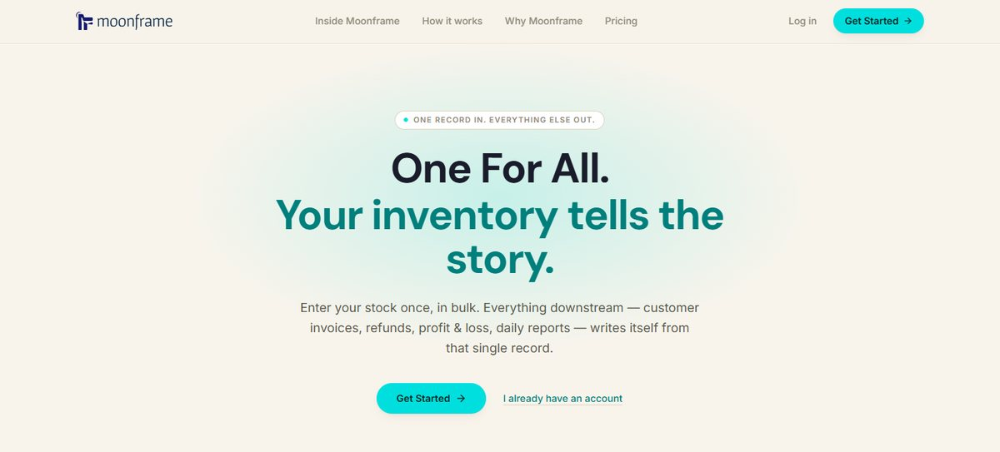
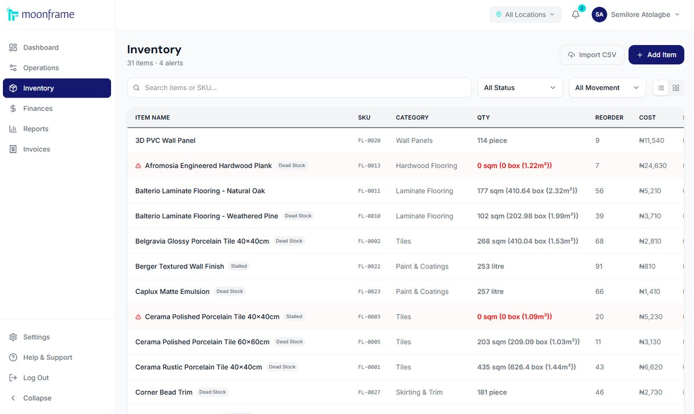
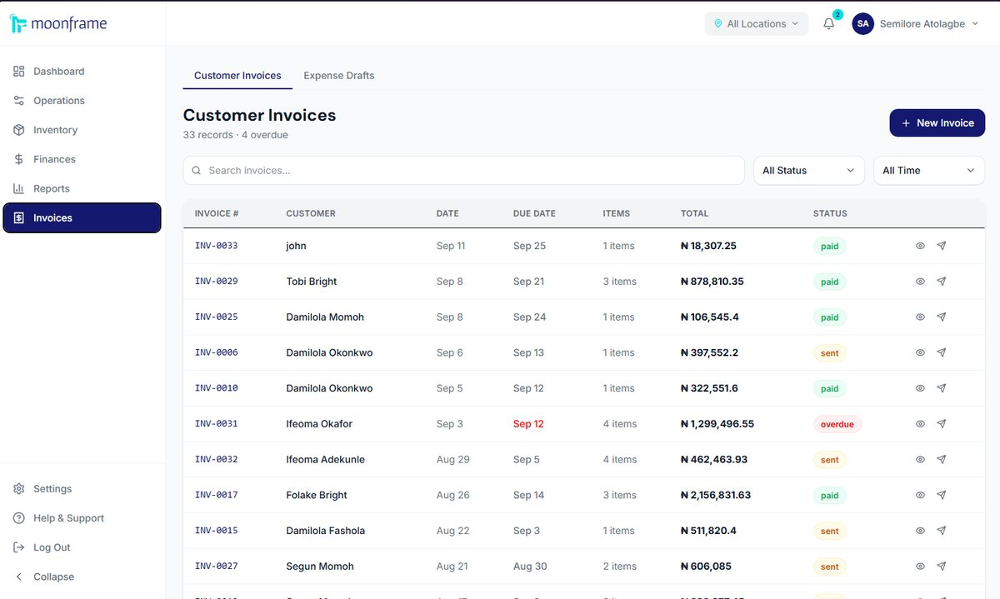
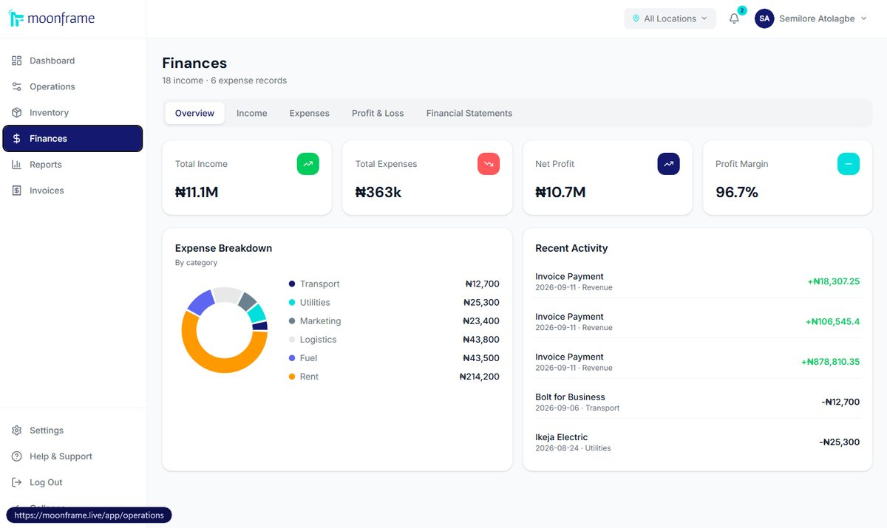
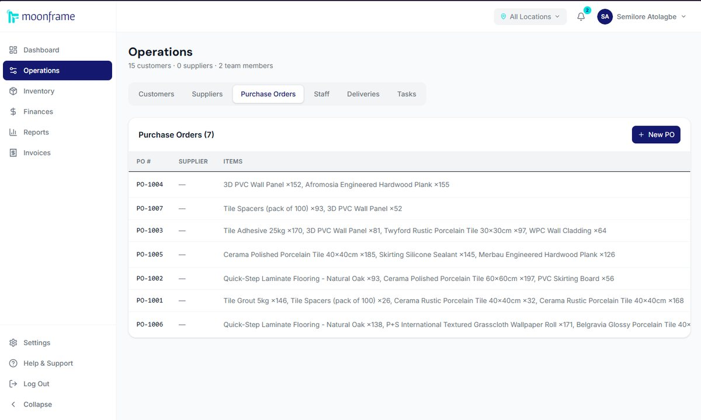
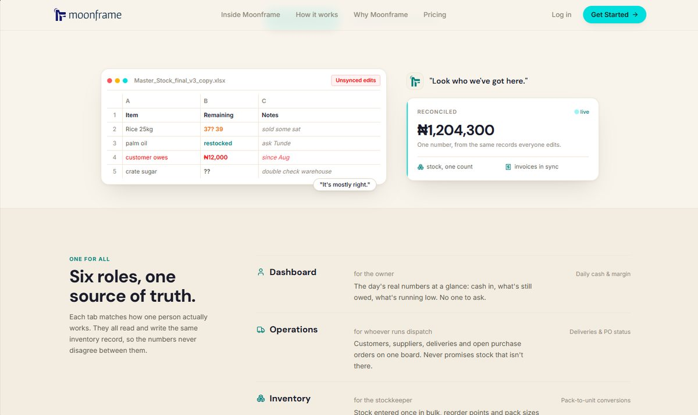

The Problem I Was Watching
Small businesses in Nigeria don't fail because they have bad products. They fail because they have no operational memory. Stock counts live in a spreadsheet called Master_Stock_final_v3_copy. Sales get re-typed into a POS, shipments into a delivery sheet, and someone reconciles all of it at 9pm. Every copy disagrees with the others.
I saw this up close at Floorkraft, a flooring company I work with, where a warehouse count I led turned up discrepancies of over 1,000 cartons. Nobody had done anything wrong. The business just had five records of the same stock, and none of them was true.
"Enter your stock once, in bulk. Everything downstream writes itself from that single record."
What It Does
Moonframe is built on one rule: you input once. Stock goes in once, in bulk, and again whenever you restock. Invoices, stock movements, the customer ledger, profit & loss and daily reports are all generated from that record, so nothing is entered twice and the numbers never disagree.
It's split into six modules, each shaped around the person who actually uses it:
The details come from how Nigerian businesses actually trade. Invoices go out as PDFs on WhatsApp. Inventory converts between packs and units, so the count holds whether you sell a full sack of flour or a single cup. There's no accounting vocabulary anywhere: no debits, credits or journals. And every edit, price override and refund records who did it and when.







From MVP to a Real Business
An MVP that works on my laptop and a product people pay for are different things. Getting Moonframe live meant building everything around the modules.
Billing. Three plans (a free Starter tier, Business Pro and Enterprise) run through Paystack, with a 14-day trial and no card required. Pricing is region-aware: Nigeria keeps local prices, and the server decides the region, never the browser, because anything that touches money can't trust the client.
Plan entitlements. An entitlement engine enforces what each plan can do (locations, staff roles, invoice limits, delivery handoffs, custom roles), and a downgrade never deletes anything: extra locations get a 30-day grace period, then freeze for new entries while all existing data stays visible.
An admin console. Revenue, funnel, feature adoption, support tickets, audit log, system health and per-business overrides, so I can run the business without opening the database.
A hardening pass. Right after payments went live, I went through the backend tier by tier: atomic invoice writes, input validation, retries on outbound calls, performance indexes and consolidated row-level security. Supabase's advisor warnings went from roughly 209 to 24, and every one left is a deliberate, documented exception.
What I Built It With
React, TypeScript and Vite on the front end, hosted on Vercel. Supabase for Postgres, authentication, storage and Edge Functions. Paystack for subscriptions. Groq for the AI weekly reports on paid plans. I build with AI tools (Claude and Antigravity), which is how one person covers product, design and engineering. The product decisions, trade-offs and reviews are mine.
What I Learned Building It
The first lesson was infrastructure. Before Moonframe, I knew Supabase ran the app the way most people know a plane flies. Building something real forced me to understand the layer underneath: what a server is, why platforms exist, what deployment actually does. I wrote a full piece about it.
The second was positioning. Moonframe started as "operations, simplified", a feature list that could describe any business tool. It got sharper when I stopped listing modules and named the rule underneath them: enter it once. That sentence now decides what gets built and what doesn't.
The third was that shipping is mostly the unglamorous part. Billing edge cases, plan limits, audit logs and security warnings never show up in a demo, but they're the difference between software people try and software people trust with their money.
Where It Is Now
Moonframe is live at moonframe.live with paid plans switched on. Its first real-world deployment is Floorkraft in Abuja, which runs inventory, deliveries, operations and invoicing on it.